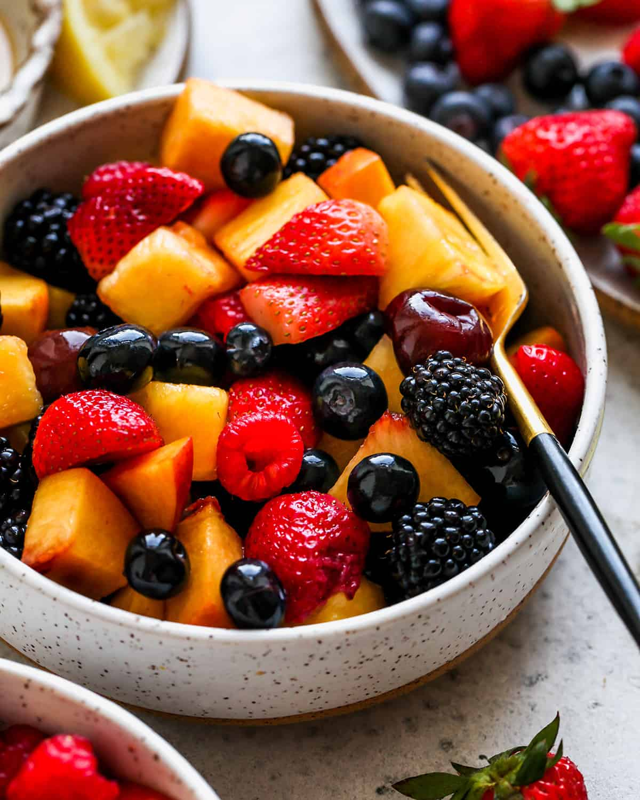

Home
Summer Fruit Salad

Description
In this summer fruit salad recipe, the best, in-season summer fruit is tossed in a simple honey lemon dressing to keep it from browning. A fresh and healthy side dish for BBQs and potlucks!
Ingredients
- 2 Peaches Diced
- 1 Pineapple (chopped into ½” pieces)
- 1 cup Cherries pitted and quarted
- 4 ounces Blueberries
- 1 pound Strawberries quarted
- 4 ounces Raspberries
- 4 ounces Blackberries
Steps
- In a small bowl, whisk together honey and lemon juice.
- Combine peaches, pineapple cherries, blueberries and strawberries in a large bowl.
- Drizzle the dressing over the fruit and stir until it’s evenly distributed.
- Gently stir in the raspberries and blackberries.
- Cover and chill for 1 hour, then serve.